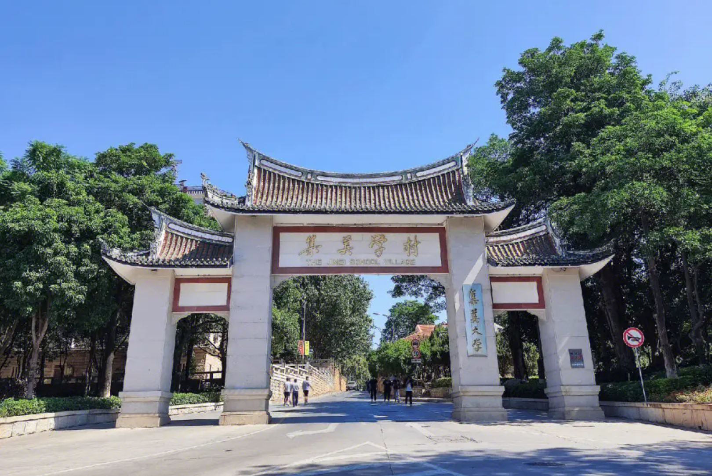
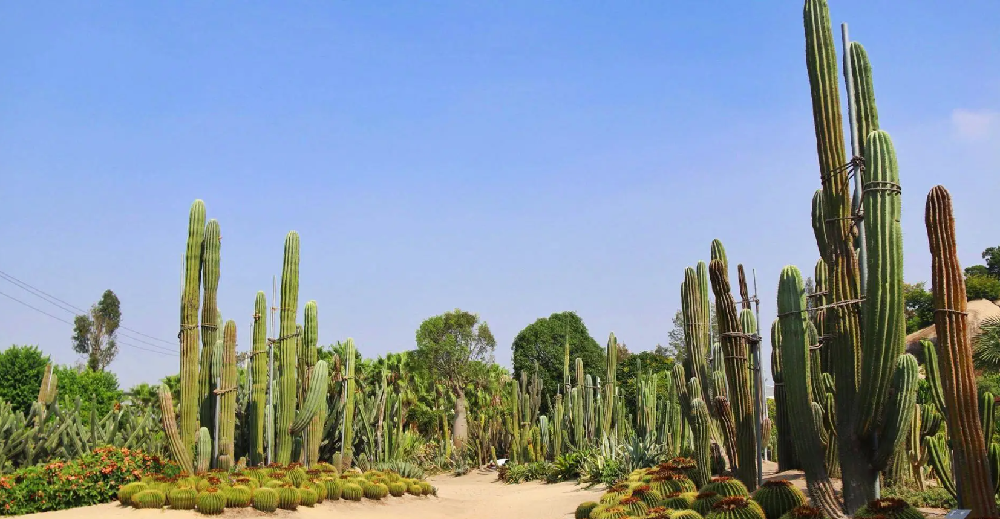

集美学村
集美学村位于厦门市集美区东南角，是集美半岛上的一个文化景点。这个学村是由著名爱国华侨领袖陈嘉庚先生倾资创建的，因此充满了文化和历史价值。学村内有嘉庚建筑、龙舟池、嘉庚故居、陈嘉庚先生生平事迹陈列馆、嘉庚公园和鳌园等著名景点。这些建筑不仅高大壮观，而且细节之处也各具匠心，体现了中西建筑的融合风格。此外，学村还保留了许多传统的手工艺和文化活动，是一个值得一游的观光风景区。

沙坡尾
沙坡尾是厦门港的源起之地，从清代起就作为避风港。沙坡尾是厦港街道辖7个社区之一，南侧毗邻南普陀寺和厦门大学，其名来源是因为这里是一大段沙滩的最末端。早期的厦门港是一处弧形的海湾，这一带海湾呈月牙型，金色的沙滩连成一片，故有“玉沙坡”美称。

中华城
中华城，厦门高端的综合性景观型商业中心，是福建首个具备国际标准真冰滑冰场、主题餐饮、生活家居的商业中心。其总建筑面积为16万平方米。

厦门夜景
厦门夜景指的是厦门市夜景建设工程，其属国内首次大规模运用LED技术打造城市的美丽夜景，项目遍布思明、湖里、海沧、集美四区。

鼓浪屿
鼓浪屿是厦门岛西南隅的一颗璀璨明珠，与厦门市隔海相望。这里既有独特的侨乡风情，又有美味的闽南特色小吃，如面线糊、沙茶面和海蛎煎等。菽庄花园、日光岩和皓月园等热门景点吸引了无数游客。此外，岛上还有许多风格各异的老建筑和文艺小店，如张三疯奶茶铺和苏小糖，让人可以慢下来，享受生活的每一刻。2017年，鼓浪屿更是申遗成功，成为中国第52个世界遗产。

厦门园林植物园
厦门园林植物园，俗称“万石植物园”，是福建省首个植物园，始建于1960年。园内拥有超过7000种植物，其中雨林世界和沙生植物区尤为引人注目。雨林世界雾气缭绕，呈现出如梦似幻的热带雨林景观；而沙生植物区的仙人掌则是拍照的绝佳背景。除了丰富的植物资源，这里还有石刻、湖泊、草坪和寺庙等景观，尤其是新碑林的最高点，可以俯瞰半个厦门岛。因此，它不仅是植物爱好者的天堂，也是摄影爱好者的网红打卡地。

厦门园博苑
厦门园博苑，全称为“厦门国际园林博览苑”，是厦门的4A级景区。它位于福建省厦门市集美区集杏海堤66号，是由16座桥梁连接的九个岛屿和两个半岛组成的“水上园博园”。其中，五个为展园岛屿，四个为生态景观岛。园博苑内有许多著名景点，如华南片区规模较大的“音乐喷泉”、总长2100米的“园博大道”、建于海水中央的“月光环”和八面向海的“杏林阁”。